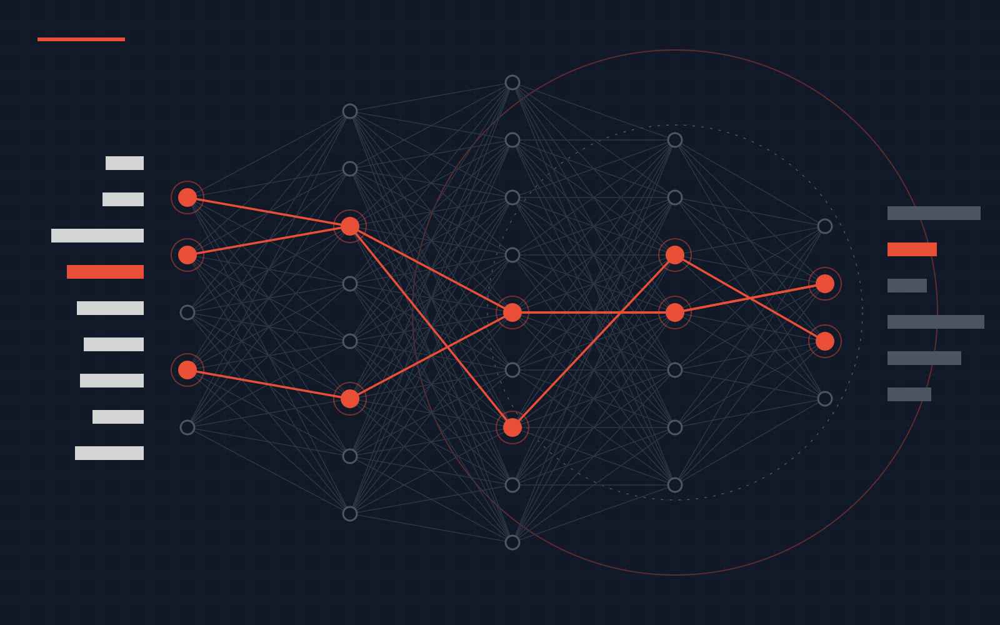

Modelos de IA menores e especializados começam a substituir gigantes genéricos nas empresas
Com custos de inferência em queda e exigências de privacidade em alta, equipes de tecnologia trocam modelos de propósito geral por soluções compactas, treinadas para tarefas específicas e executadas na própria infraestrutura.
Por Marina Duarte8 min de leitura

Modelos especializados ativam apenas o conhecimento necessário para cada tarefa. Ilustração: Estúdio TechPulse
Durante os primeiros anos da onda de inteligência artificial generativa, a estratégia mais comum nas empresas era simples: contratar acesso ao maior modelo disponível e adaptá-lo por meio de instruções. Em 2026, esse cenário começou a mudar. Times de engenharia passaram a perguntar quanto de capacidade realmente é necessário para resolver cada problema.
A resposta, em muitos casos, é: bem menos do que se imaginava. Classificar chamados de suporte, extrair dados de notas fiscais ou resumir relatórios internos são tarefas bem delimitadas, que podem ser resolvidas por modelos com uma fração do tamanho dos sistemas de uso geral.
Custo, latência e privacidade
Três fatores explicam a mudança. O primeiro é o custo de inferência: modelos compactos exigem menos memória e menos poder de processamento, o que reduz a conta mensal de infraestrutura. O segundo é a latência, já que respostas mais rápidas melhoram a experiência em aplicações interativas. O terceiro é a privacidade: executar o modelo nos próprios servidores evita que dados sensíveis saiam do ambiente da empresa.
“O modelo ideal não é o maior, é o que resolve o problema com o menor custo e o menor risco.”
Como as equipes estão fazendo a transição
O caminho mais comum combina técnicas já conhecidas da área de machine learning:
Ajuste fino de modelos abertos com dados da própria empresa;
Destilação, em que um modelo grande ensina um modelo menor a reproduzir suas respostas;
Quantização, que reduz a precisão numérica dos pesos para economizar memória;
Recuperação de informação (RAG), que consulta documentos internos antes de gerar a resposta.
O que ainda exige cautela
Modelos especializados também têm limitações. Eles tendem a errar mais quando recebem perguntas fora do domínio para o qual foram treinados, e a manutenção de vários modelos pequenos pode se tornar mais complexa do que a de um único sistema. Por isso, especialistas recomendam medir resultados com conjuntos de teste próprios antes de qualquer migração.
Para estudantes e profissionais em início de carreira, a tendência reforça a importância de fundamentos: entender como avaliar modelos, preparar dados e monitorar sistemas em produção vale tanto quanto conhecer a ferramenta do momento.
Nota da redação: esta matéria é fictícia e foi produzida como conteúdo demonstrativo para um projeto acadêmico de desenvolvimento Front-End.